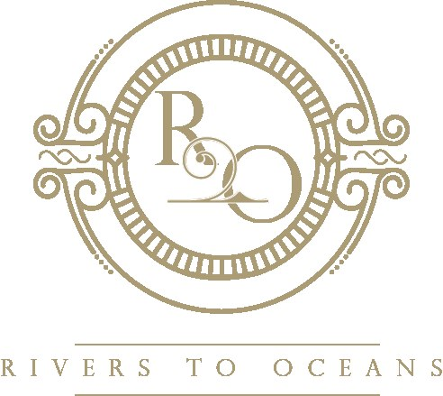
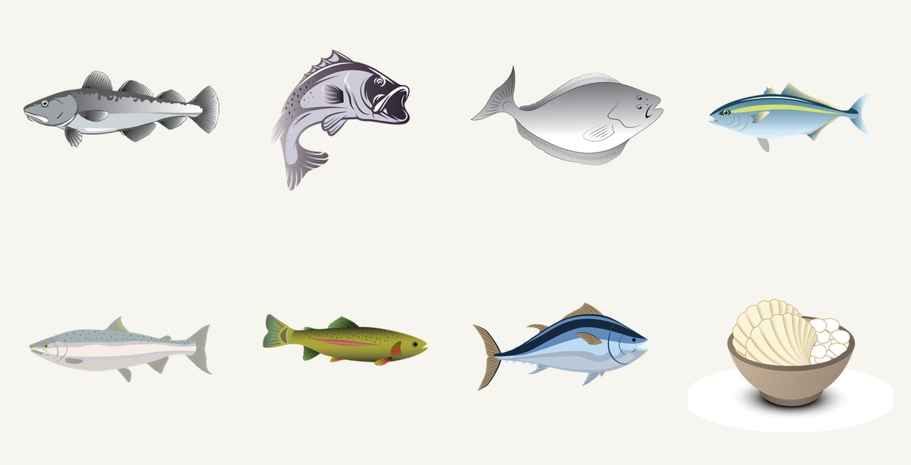
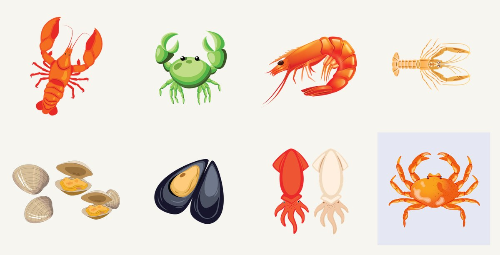
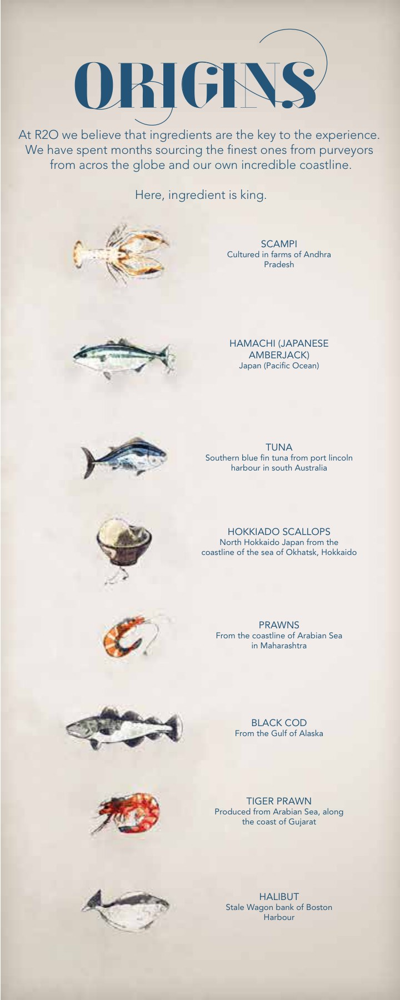
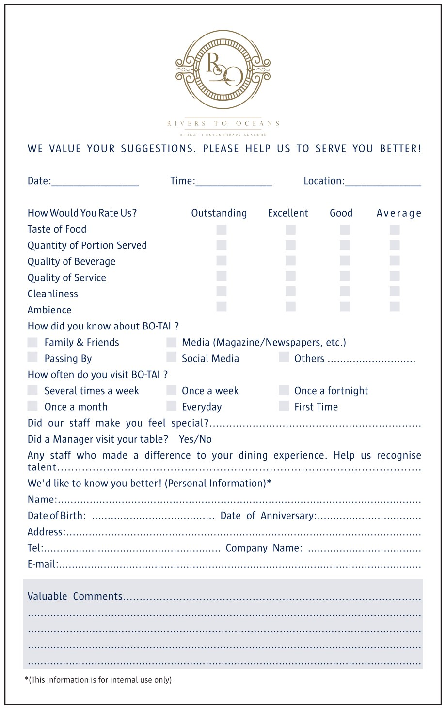
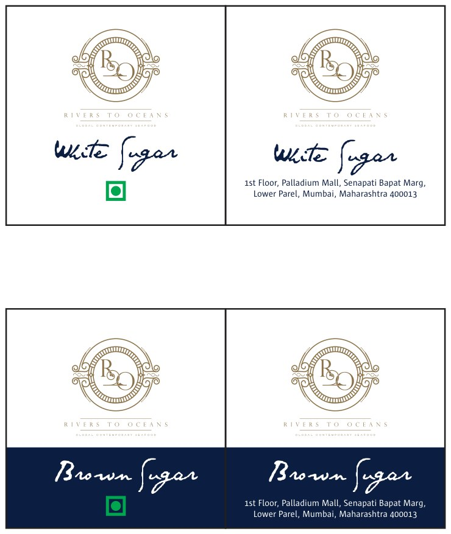

A brand identity for R2O — "Rivers to Oceans" — a seafood restaurant in Mumbai. A gold monogram in an ornate rope-and-anchor frame, a hand-drawn catalogue of the catch, and a full suite of menus and collateral built around the journey from river to ocean to plate.
R2O — Rivers to Oceans — is a seafood restaurant, and the whole identity hangs on that one idea: provenance. The name becomes a gold monogram, "R" and "O" cradling each other inside an ornate frame of rope, waves and a quiet anchor, finished with the line "Rivers to Oceans."
Around the mark sits the heart of the project — a hand-drawn library of the catch, from black cod and Chilean bass to lobster, mud crab, hamachi and scampi — so the menu can show, not just tell, where dinner came from.






A monogram you could engrave on silver.
The logo is built to feel like a maritime crest — gold line-work, a circular rope frame, scrolling waves and a small anchor woven into the "R2O" cipher. It reads as old-world and precise rather than nautical-kitsch, and it sits as comfortably foiled on a navy menu as it does embossed on a sugar pouch.
The illustrated catalogue is what makes the brand specific. Each species is drawn in the same hand — accurate enough to name, stylised enough to charm — and deployed across the "Origins" index, the menus and the collateral. It turns a list of dishes into a small natural history of the meal, and gives the restaurant a visual language no stock photography could.